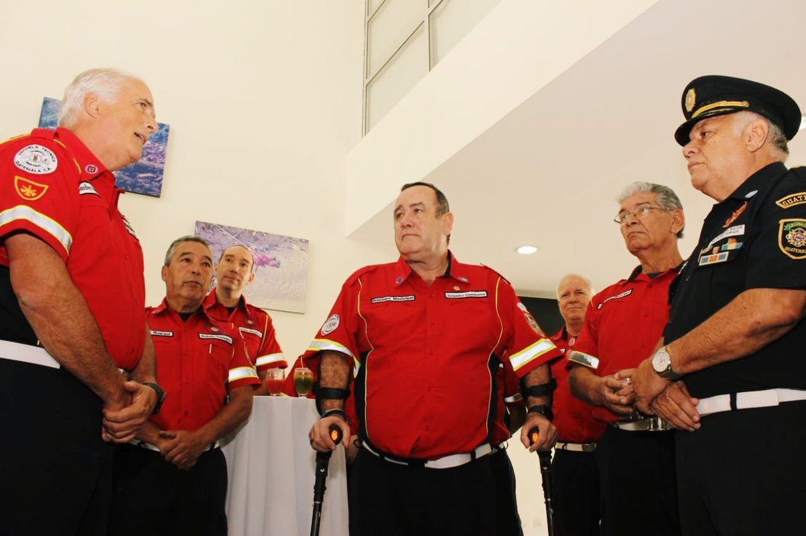

-
1982
Dirección General de Servicios de Salud Pública
Giammattei Laboró en la Dirección General de Servicios de Salud Pública atendiendo la emergencia por la depresión tropical Paul.
-
1985
Coordinador General de Elecciones en el Tribunal Supremo Electoral
Giammattei estuvo a cargo de los procesos electorales de 1985, 1988, 1990 y 91. En 1985 también fue Director del Departamento de Transportes Públicos Urbanos de la Municipalidad de Guatemala.
-
1986
¿Bombero?
Giammattei entró al Cuerpo de Bomberos.
 -
1986
En Pavón
Giammattei Participó en el operativo para dar fin al amotinamiento de la cárcel de Pavón.
-
1993
Secretario Privado de Vicepresidencia
Giammattei trabajó para Arturo Herbruger, e implementó un programa de desarrollo fronterizo.
-
1999
Alcaldía de la Ciudad de Guatemala
Giammattei se postuló a la Alcaldía de la Ciudad de Guatemala.
-
2002
Impulsa la inscripción de la UNE junto a álvaro Colom
Sandra Torres. Después de haber trabajado en la formación del partido durante casi 2 años, se inscribe el partido UNE.
-
2003
Alcaldía de la Ciudad de Guatemala (Otra vez)
Giammattei se postuló a la Alcaldía de la Ciudad de Guatemala por segunda vez.
-
2005
Director del Sistema Penitenciario
Óscar Berger, le brindó el cargo de Director del Sistema Penitenciario. En este puesto logró la aprobación de la primera Ley del Régimen del Sistema Penitenciario. Realizó el operativo Pavo Real (2006).
.jpg)
-
2007
Candidato Presidencial (1ra vez)
Se postuló como Candidato Presidencial por el partido GANA. Obtuvo el 17.2% de los votos generales y resultó tercero.
-
2008
Gobierna Guatemala
Alvaro Colom y Sandra Torres gobiernan Guatemala. Sandra Torres acompaña en el gobierno a Alvaro Colom, como la primera en este periodo.
-
2010
CICIG X Giammattei
Giammattei recibe acusaciones acerca de las muertes en el operativo Pavo Real 2006. Fue acusado de abuso de autoridad, asesinato, ejecución extrajudicial, se refugió en la embajada Honduras, posteriormente se entregó a la Policía.
-
2011
Muestra su aspiración de participar en las elecciones
Busca inscribirse en las elecciones pero su inscripción fue denegada por el matrimonio que mantenía con Alvaro Colom por lo que busca el divorcio para poder ser participe el próximo año.
-
06/2011
¡Prisión!
Luego de 10 meses en prisión preventiva en la cárcel militar Mariscal Zabala el Tribunal Primero de Alto Riesgo de la Ciudad de Guatemala resolvió que no había pruebas incriminatorias contra Giammattei y ordenó su libertad sin cargos. En ese mismo año se postuló por segunda vez como candidato presidencial, esta vez por el partido CASA, formación de centro-derecha. Solo obtuvo el 1.05% de los votos.
-
2015
Sandra Torres en busca de la presidencia
Sandra Torres participa por primera vez como candidata a la Presidencia de la República. Pasa a segunda vuelta y pierde frente al candidato Jimmy Morales. Ese mismo año Giammattei se postuló como Candidato Presidencial por el partido Fuerza, formación de centro nacionalista.

-
2018
Candidato Presidencial (4ta vez)
Giammattei postuló como Candidato Presidencial por el partido VAMOS.
-
2019
Sandra Regresa
Vuelve a participar en la contienda presidencial y fue derrotada en su aspiración a la presidencia por Alejandro Giammattei.
-
14/10/2020
Presidente
Giammattei. Luego de haber ganado las elecciones en 2019, asumió el cargo el 14/10/2020.

-
14/10/2020
Actualidad
-
REFERENCIAS
- Nómada. (2017, 8 agosto). El perfil de Sandra Torres, la maquilera impaciente.
- Gramajo. (2019, 18 agosto). El mapa electoral que revela por qué ganó Sandra Torres.
- Villeda. (2019, 12 agosto). Sandra Torres, biografía de la pragmática con criticado pasado político.
- BBC News. (2019, 18 junio). Guatemala election: Former First Lady Sandra Torres wins first round.
- Dr. Alejandro Giammattei (2019, 13 mayo). VAMOS Guatemala.
- Ortiz, R. (2020, 30 enero). Alejandro Giammattei Falla.
- Villeda, B. B. (2019, 12 agosto). Alejandro Giammattei, biografía de un candidato itinerante. Prensa Libre.
- Timetoast. (1956, 9 marzo). Alejandro Giammattei timeline. Timetoast Timelines.
Copyright © 2021 grupo 5. All rights reserved